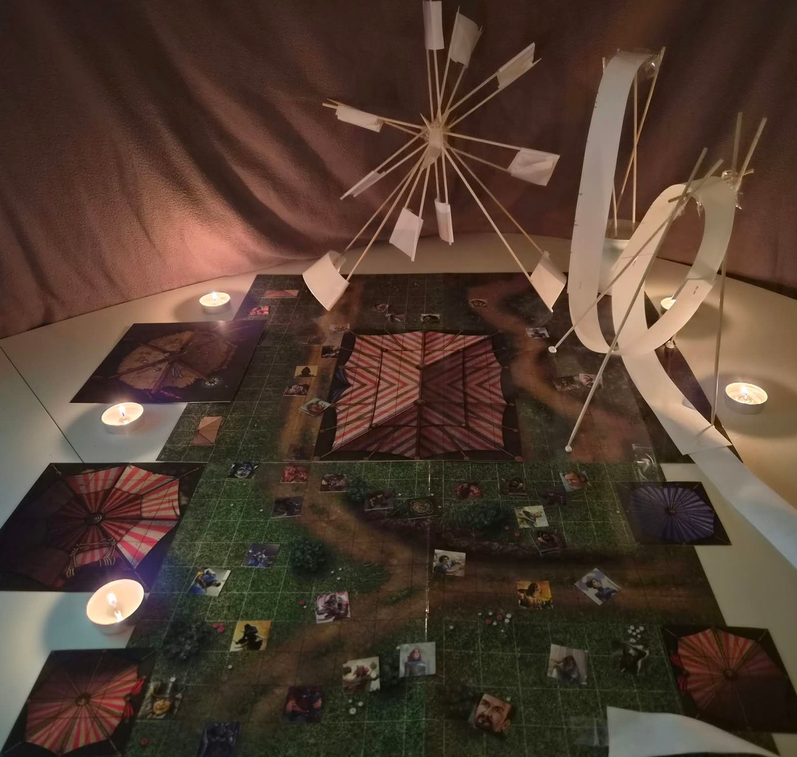

La fête des Mille Merveilles

- Apparue en une journée, à quelques lieues de Garches. Lanternes, roulottes, une grande roue.
- Nom : fête des Mille Merveilles. Tenue par la troupe des Mille Merveilles (Madame Vespa).
- Les montagnes russes mènent à un circuit souterrain dans des carrières de pierre. Lien possible avec la galerie cherchée par Aldryx.
- La fête emprisonne les souvenirs. Créée pour effacer les traumatismes de la guerre. Cet oubli pousse aussi à repartir en guerre : un cycle sans fin.